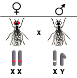
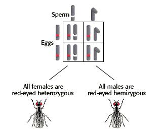

Sex-Linked Inheritance Problem Set
Problem 3: Predicting the offspring of a homozygous red-eyed female fly
Tutorial to help answer the question
| In a cross between a pure bred, red-eyed female fruit fly and a white-eyed male, what percent of the male offspring will have white eyes? (white eyes are X-linked, recessive) |
Tutorial
Genotypes and phenotypes of parents
|
The white-eyed male is hemizygous for the X chromosome with a white eye mutation. |
 |
Genotypes and phenotypes of offspring
|
None of the male or female offspring will have white eyes. |
 |


University of Arizona
Updated: July 15, 1999
Contact the Development Team
http://biology.arizona.edu
All contents copyright © 1996-99. All rights reserved.